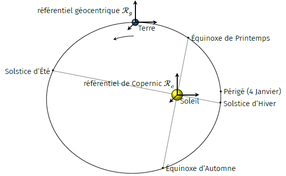

un repère
\(R =\left(O,\overrightarrow{u_1},\overrightarrow{u_2},\overrightarrow{u_3}\right)\)
où la position d’un point \(P\) est donnée par le vecteur \(\overrightarrow{OP} =
c_1\overrightarrow{u_1} + c_2\overrightarrow{u_2}
+ c_3\overrightarrow{u_3}\)
un repère
\( R' = \left( O', \overrightarrow{u'_1},
\overrightarrow{u'_2}, \overrightarrow{u'_3} \right) \)
où la position du même point \(P\) est donnée par le vecteur
\(\overrightarrow{O'P} = c'_1\overrightarrow{u'_1}
+ c'_2\overrightarrow{u'_2}
+c'_3\overrightarrow{u'_3}\)
Considérons le repère \(R\) comme fixe et le repère \(R'\) comme mobile.
Il faut préciser le sens de ce qui a été affirmé ci-dessus : la distinction entre
repère fixe et mobile est arbitraire et conventionnelle, comme la relativité galiléenne nous
l’assure : on ne peut pas privilégier, en nature, aucun repère en le qualifiant de
fixe, voire, il n’existe rien en nature qu’on puisse considérer comme absolument
immobile, de telle sorte que tout autre mouvement soit mesuré par rapport à cet observateur.
Au contraire, chaque observateur peut être considéré comme conventionnellement immobile, et
ainsi faisant on évaluera les mouvements relatifs à cet observateur, sans jamais pouvoir les
qualifier de mouvements absolus. Souvent, on dit que Galilée a abattu le concept, lié à la
cosmologie de Ptolémée, d’espace absolu, en introduisant le concept d’espace relatif.
L’objet de l’étude est d’exprimer la vitesse et l’accélération du point \(P\) à partir de
ses coordonnées par rapport au référentiel mobile (coordonnées relatives) et du mouvement
d’entraînement du référentiel mobile.
Composition des vitesses
On appelle vitesse absolue du point \(P\), la vitesse du point \(P\) par rapport au
référentiel fixe, c’est le vecteur :
$$
\quad \overrightarrow{v_a} = \overrightarrow{v_{P/R}}
= { \left.\frac{\mathrm{d}\overrightarrow{OP}}{\mathrm{d}t} \right| }_{R}
$$
Or la relation de Chasles nous donne \( \overrightarrow{OP} =
\overrightarrow{OO'} + \overrightarrow{O'P} \), d’où :
$$
\quad \overrightarrow{v_{P/R}}
= { \left.\frac{\mathrm{d}\overrightarrow{OP }}{\mathrm{d}t} \right| }_{R}
= { \left.\frac{\mathrm{d}\overrightarrow{OO'}}{\mathrm{d}t} \right| }_{R}
+ { \left.\frac{\mathrm{d}\overrightarrow{O'P}}{\mathrm{d}t} \right| }_{R}
$$
Il faut donc exprimer la dérivée temporelle des vecteurs \(u'_i\) par
rapport au référentiel \(R\).
Considérons des variations élémentaires d’angle \(\mathrm{d}\theta_i=\omega_{i}\mathrm{d}t\)
autour des axes \( \left(O',\overrightarrow{u'_i} \right) \).
Le vecteur \(\overrightarrow{u'_1}\) varie de
\(\mathrm{d}\overrightarrow{u'_1} = \mathrm{d}\theta_3\overrightarrow{u'_2}
- \mathrm{d}\theta_2\overrightarrow{u'_3} \).
Le vecteur \(\overrightarrow{u'_2}\) varie de
\(\mathrm{d}\overrightarrow{u'_2} = \mathrm{d}\theta_1\overrightarrow{u'_3}
- \mathrm{d}\theta_3\overrightarrow{u'_1} \).
Le vecteur \(\overrightarrow{u'_3}\) varie de
\(\mathrm{d}\overrightarrow{u'_3} = \mathrm{d}\theta_2\overrightarrow{u'_1}
- \mathrm{d}\theta_1\overrightarrow{u'_2} \). Variation du vecteur \(\overrightarrow{u'_1}\).
On a alors :
$$
\begin{align}
c'_1{\left.\frac{\mathrm{d}\overrightarrow{u'_1}}{dt} \right| }_{R}
+ c'_2{\left.\frac{\mathrm{d}\overrightarrow{u'_2}}{dt} \right| }_{R}
+ c'_3{\left.\frac{\mathrm{d}\overrightarrow{u'_3}}{dt} \right| }_{R}
& =
c'_1 \left( \omega_{3}\overrightarrow{u'_2}
- \omega_{2}\overrightarrow{u'_3} \right)
+ c'_2 \left( \omega_{1}\overrightarrow{u'_3}
- \omega_{3}\overrightarrow{u'_1} \right) \\
& \quad\quad + c'_3 \left( \omega_{2}\overrightarrow{u'_1}
- \omega_{1}\overrightarrow{u'_2}\right) \\
& =
\left( \omega_{2}c'_3
- \omega_{3}c'_2 \right) \overrightarrow{u'_1}
+ \left( \omega_{3}c'_1
- \omega_{1}c'_3 \right) \overrightarrow{u'_2} \\
& \quad\quad + \left( \omega_{1}c'_2
- \omega_{2}c'_1 \right) \overrightarrow{u'_3} \\
& = \left( \begin{matrix}
\omega_1 \\
\omega_2 \\
\omega_3
\end{matrix} \right)_{R'}
\wedge \left( \begin{matrix}
c'_1 \\
c'_2 \\
c'_3 \end{matrix} \right)_{R'}
\end{align}
$$
Le vecteur \( \overrightarrow{\Omega_{R'/R}} =
{ \left( \begin{matrix} \omega_1 \\ \omega_2 \\ \omega_3 \end{matrix} \right) }
_{ R' }\) est appelé vecteur instantané de rotation du repère \(R'\)
par rapport au repère \(R\).
On écrit alors la formule de la base mobile, aussi appelée formule de Bour :
$$
\quad \boxed{
{ \left.\frac{\mathrm{d}\overrightarrow{O'P}}{\mathrm{d}t} \right| }_{R } =
{ \left.\frac{\mathrm{d}\overrightarrow{O'P}}{\mathrm{d}t} \right| }_{R'}
+ \overrightarrow{\Omega_{R'/R}} \wedge \overrightarrow{O'P} }
$$
De manière générale, pour tout vecteur \(\overrightarrow{u}\) fixe dans \(R'\) on
a :
$$
\quad \boxed{
{\left.\frac{\mathrm{d}\overrightarrow{u}}{\mathrm{d}t} \right|}_{ R } =
\overrightarrow{\Omega_{R'/R}} \wedge \overrightarrow{u} }
$$
Loi de composition des vitesses
Reprenons le calcul de la vitesse du point \(P\) dans le référentiel \(R\).
$$
\begin{align}
\overrightarrow{v_{P/R}} & =
{ \left.\frac{\mathrm{d}\overrightarrow{OP}}{\mathrm{d}t} \right|}_{R} \\
& = { \left.\frac{\mathrm{d}\overrightarrow{OO'}}{\mathrm{d}t} \right| }_{R}
+ { \left.\frac{\mathrm{d}\overrightarrow{O'P}}{\mathrm{d}t} \right| }_{R} \\
& = { \left.\frac{\mathrm{d}\overrightarrow{OO'}}{\mathrm{d}t} \right| }_{R }
+ { \left.\frac{\mathrm{d}\overrightarrow{O'P}}{\mathrm{d}t} \right| }_{R'}
+ \overrightarrow{\Omega_{R'/R}} \wedge \overrightarrow{O'P}
\end{align}
$$
D’où finalement, la loi de composition des vitesses :
$$
\quad \boxed{
\overrightarrow{v_{P/R}} = \overrightarrow{v_{P/R'}}
+ \overrightarrow{v_{O'/R}}
+ \overrightarrow{\Omega_{R'/R}} \wedge \overrightarrow{O'P} }
$$
On appelle vitesse relative la vitesse du point \(P\) par rapport au repère
\(R'\), c’est le vecteur :
$$
\quad \overrightarrow{v_r}(P) = \overrightarrow{v_{P/R'}}
$$
On appelle vitesse d’entraînement la vitesse du point \(P\) par rapport au repère
\(R\) considéré comme fixe dans le repère \(R'\), c’est le
vecteur :
$$
\quad \overrightarrow{v_e}(P) = \overrightarrow{v_{O'/R}}
+ \overrightarrow{\Omega_{R'/R}} \wedge \overrightarrow{O'P}
$$
Composition des accélérations
On appelle accélération absolue du point \(P\), l’accélération du point \(P\) par
rapport au référentiel fixe, c’est le vecteur :
$$
\begin{align}
\overrightarrow{a_a} = \overrightarrow{a_{P/R}}
& = { \left.\frac{\mathrm{d}\overrightarrow{v_{P/R}}}{\mathrm{d}t} \right| }_{R} \\
& = \left.\frac{\mathrm{d}{}}{\mathrm{d}t} \left(
\overrightarrow{v_{P/R'}}
+ \overrightarrow{v_{O'/R}}
+ \overrightarrow{\Omega_{R'/R}} \wedge \overrightarrow{O'P} \right)
\right|_{R}
\end{align}
$$
D’où finalement la loi de composition des accélérations :
$$
\quad \boxed{
\overrightarrow{a_a} =
\overrightarrow{a_{P/R'}}
+ \overrightarrow{a_{O'/R}}
+ \left.\frac{\mathrm{d}{\overrightarrow{\Omega_{R'/R}}}}{\mathrm{d}t}\right|_{R}
\wedge \overrightarrow{O'P}
+ \overrightarrow{\Omega_{R'/R}}
\wedge \left( \overrightarrow{\Omega_{R'/R}} \wedge \overrightarrow{O'P} \right)
+ 2 \times \overrightarrow{\Omega_{R'/R}} \wedge \overrightarrow{v_{P/R'}} }
$$
On appelle accélération relative l’accélération du point \(P\) par rapport au repère
\(R'\). C’est le vecteur :
$$
\quad \overrightarrow{a_r} = \overrightarrow{a_{P/R'}}
$$
On appelle accélération d’entrainement l’accélération d’un point \(P'\) immobile dans \(R'\)
coïncidant avec le point \(P\) à l’instant \(t\). C’est le vecteur :
$$
\quad \overrightarrow{a_e} =
\overrightarrow{a_{O'/R}}
+ \left. \frac{\mathrm{d}\overrightarrow{\Omega_{R'/R}}}{\mathrm{d}t} \right|_{R}
\wedge \overrightarrow{O'P}
+ \overrightarrow{\Omega_{R'/R}}
\wedge \left( \overrightarrow{\Omega_{R'/R}} \wedge \overrightarrow{O'P} \right)
$$
On appelle accélération de Coriolis le vecteur :
$$
\quad \overrightarrow{a_c} = 2 \times \overrightarrow{\Omega_{R'/R}}
\wedge \overrightarrow{v_{P/R'}}
$$
Principe de relativité galiléenne
Supposons un point matériel \(M\) isolé dans un référentiel \(R\) considéré galiléen, et
cherchons à quelle(s) condition(s) le référentiel \(R'\) présente un caractère galiléen,
c’est-à-dire respecte le principe d’inertie.
En vertu de la loi de composition des accélérations on a :
$$
\quad \overrightarrow{a_{M/R}} = \overrightarrow{a_{M/R'}} + \overrightarrow{a_e}(M)
+ 2 \times \overrightarrow{\Omega_{R'/R}} \wedge \overrightarrow{v_r}(M)
$$
Or, le point M étant isolé, il vient \(\overrightarrow{a_{M/R}}=\overrightarrow{0}\). Si
l’on veut que le référentiel \(R'\) soit également galiléen, il faut
\(\overrightarrow{a_{M/R'}}=\overrightarrow{0}\) en vertu du principe d’inertie,
soit :
$$
\quad \overrightarrow{a_e}(M) + 2 \times \overrightarrow{\Omega_{R'/R}}
\wedge \overrightarrow{v_r}(M)
= \overrightarrow{0} \quad \forall \overrightarrow{v_r}(M)
$$
Cette relation implique deux conditions :
\(\overrightarrow{\Omega_{R'/R}} = \overrightarrow{0}\) : \(R'\) est
nécessairement en translation par rapport au référentiel galiléen.
\(\overrightarrow{a_e}(M)= \overrightarrow{0} \Rightarrow
\overrightarrow{v_{R'/R}}= \overrightarrow{C^{te}}\) : le référentiel est en
translation uniforme.
Principe de Relativité
Tout référentiel en translation uniforme par rapport à un référentiel galiléen est galiléen.
Les lois de la mécanique dans ces référentiels sont les mêmes et il est impossible de les
distinguer par une expérience de mécanique. Il n’existe donc pas de référentiel absolu qui
permettrait de faire la différence entre un référentiel au repos et un référentiel en
translation uniforme.
Notons que le caractère galiléen d’un référentiel est lié à la validité du principe
d’inertie. Le critère de validité dépend donc de la précision que l’on exige. C’est
pourquoi les référentiels considérés galiléens le sont dans un cadre approximatif à
préciser.
Citons-en quelques uns couramment utilisés.
Référentiel de Copernic
Il s’agit d’un référentiel lié au centre d’inertie du système solaire et dont les axes
pointent vers trois étoiles dites fixes. Il est utilisé en tant que référentiel
galiléen lorsque l’on considère des expériences terrestres longues où la rotation de
la Terre autour du Soleil ne peut être négligée. Rigoureusement, ce référentiel n’est pas
galiléen car le Soleil est en mouvement dans notre galaxie, la Voie Lactée. Il décrit une
orbite circulaire de rayon \(D \simeq 30000\,\rm{al}\) autour du noyau galactique en une
période \(T_S = 250.10^6\,\)années. On peut donc se contenter du référentiel de Copernic
comme référentiel galiléen tant que la durée de l’expérience est très faible devant \(T_S\).
Concrètement cette dernière condition est toujours vérifiée pour des expériences humaines.
Référentiel géocentrique
Le référentiel géocentrique est lié au centre de la Terre et dont ses axes conservent la
même orientation par rapport au référentiel de Copernic. Il est donc en translation quasi
circulaire par rapport au référentiel de Copernic. On peut le considérer comme galiléen sur
des expériences terrestres peu longues (une journée maximum), car, dans ce cas, le
mouvement du centre de la Terre est alors assimilable à une trajectoire quasi rectiligne
uniforme.

Le référentiel géocentrique est en translation elliptique par rapport au
référentiel de Copernic. L’excentricité de l’orbite terrestre a été exagérée sur le
schéma.
Référentiel terrestre
Le référentiel terrestre est lié à la surface de la Terre et ses axes pointent
traditionnellement vers le Sud, l’Est et le Zénith. Par rapport au référentiel géocentrique,
ce référentiel est en rotation (\(\Omega = 2\pi/T_0 = 7,3.10^{−5}\,\rm{rad.s^{−1}}\) avec
\(T_0 = 23\,\rm{h}\,56\,\rm{min}\,4\,\rm{s}\)) autour de l’axe des pôles. Bien que
rigoureusement non galiléen, ce référentiel est souvent traité comme tel car les effets de
la rotation terrestre sont souvent négligeables dans les expériences courantes.
Lois de la dynamique en référentiel non galiléen
On applique le PFD dans un référentiel \(R\) galiléen à un point matériel \(M\) de masse
\(m\) soumis à une résultante des forces \(\overrightarrow{F}\) :
$$
\quad m \overrightarrow{a_{M/R}} = \overrightarrow{F}
$$
Considérons un référentiel \(R'\) accéléré, on a :
$$
\quad \overrightarrow{a_{M/R}}
= \overrightarrow{a_{M/R'}} + \overrightarrow{a_e}(M) + \overrightarrow{a_c}(M)
= \frac{\overrightarrow{F}}{m}
$$
d’où :
$$
\quad m \overrightarrow{a_{M/R'}}
= \overrightarrow{F} - m\overrightarrow{a_e}(M) - m\overrightarrow{a_c}(M)
$$
De sorte que, dans un référentiel non galiléen \(R'\), l’équation du mouvement est donnée
par la relation :
$$
\quad \boxed{
m \overrightarrow{a_{M/R'}} = \overrightarrow{F} + \overrightarrow{f_{ie}}
+ \overrightarrow{f_{ic}} }
$$
avec
$$
\quad \boxed{ \left\{ \begin{aligned}
\overrightarrow{f_{ie}} & = -m\overrightarrow{a_e} \\
\overrightarrow{f_{ic}} & = -m\overrightarrow{a_c}
\end{aligned} \right. }
$$
Finalement, dans un référentiel non galiléen, tout se passe comme si la relation
fondamentale de la dynamique était valide à condition d’ajouter dans le bilan des forces,
deux forces fictives : la force d’inertie d’entraînement et la force d’inertie de
Coriolis.
Ces deux forces d’inertie étant liées au mouvement du éférentiel non galiléen par rapport à
un référentiel galiléen, ils apportent des renseignements sur le caractère non galiléen du
référentiel accéléré.